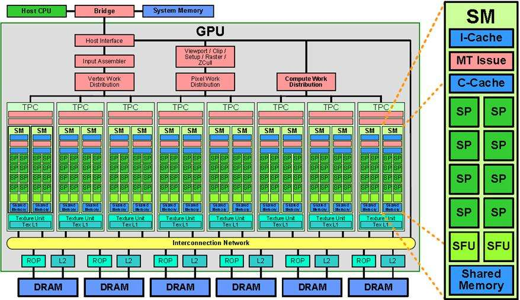

CUDA（Compute Unified Device Architecture，计算统一设备架构），在图像领域的同学多多少少都会接触到，其相关的硬件是GPU（Graphics Processing Unit，图形处理器），下面将从以下3个方面介绍：
GPU架构特点
高性能计算的关键利用多核处理器进行并行计算。计算分为串行计算和并行计算。但是串行计算的缺点非常明显，如果我们拥有多核处理器，多个任务之间不需要相互依赖，那么使用串形计算速度就很慢，可以把一些独立的模块分配到不同的处理器上进行同时计算（并行），最后再将这些结果进行整合，完成一次任务计算。
GPU和CPU的不同硬件特点决定了他们的应用场景，CPU是计算机的运算和控制的核心，GPU主要用作图形图像处理。
- CPU需要很强的通用性来处理各种不同的数据类型，比如整型、浮点数等，同时它又必须擅长处理逻辑判断所导致的大量分支跳转和中断处理，擅长流程控制和逻辑处理，不规则数据结构，不可预测存储结构，单线程程序，分支密集型算法。
- GPU面对的则是类型高度统一的、相互无依赖的大规模数据和不需要被打断的纯净的计算环境，GPU有非常多核心，擅长数据并行计算，规则数据结构，可预测存储模式。


现在的计算机体系架构中，要完成CUDA并行计算，单靠GPU一人之力是不能完成计算任务的，必须借助CPU来协同配合完成一次高性能的并行计算任务。
并行部分在GPU上运行，串行部分在CPU运行，这就是异构计算。异构计算的意思就是不同体系结构的处理器相互协作完成计算任务。CPU负责总体的程序流程，而GPU负责具体的计算任务，当GPU各个线程完成计算任务后，就将GPU那边计算得到的结果拷贝到CPU端，完成一次计算任务。
应用程序利用GPU实现加速的总体分工就是：密集计算代码（约占5%的代码量）由GPU负责完成，剩余串行代码由CPU负责执行。
CUDA线程模型
线程是程序执行的最基本单元，CUDA的并行计算就是通过成千上万个线程的并行执行来实现的。
CUDA的线程模型包括：
- Thread：线程，并行的基本单位
- Thread Block：线程块，互相合作的线程组，它的特点是：
- 允许彼此同步
- 可以通过共享内存快速交换数据
- 以1维、2维或3维组织
- Grid：一组线程块，它的特点是：
- 以1维、2维组织
- 共享全局内存
Kernel是在GPU上执行的核心程序，kernel函数是运行在某个Grid上的。理解kernel，必须要对kernel的线程层次结构有一个清晰的认识。
- 首先GPU上很多并行化的轻量级线程。kernel在device上执行时实际上是启动很多线程，一个kernel所启动的所有线程称为一个网格（grid），同一个网格上的线程共享相同的全局内存空间，grid是线程结构的第一层次。
- 网格又可以分为很多线程块（block），一个线程块里面包含很多线程，这是第二个层次。
- kernel调用时也必须通过执行配置<<<grid, block>>>来指定kernel所使用的网格维度和线程块维度。
这里解释一下SP和SM专业名词。
- SP（streaming processor,流处理器）：基本的处理单元，也称为CUDA core。最后具体的指令和任务都是在SP上处理的。GPU进行并行计算，也就是很多个SP同时做处理。
- SM（streaming multiprocessor）：多个SP加上其他的一些资源组成，也叫GPU大核，其他资源如：warp scheduler，register，shared memory等。SM可以看做GPU的心脏（对比CPU核心），register和shared memory是SM的稀缺资源。CUDA将这些资源分配给所有驻留在SM中的threads。因此，这些有限的资源就使每个SM中active warps有非常严格的限制，也就限制了并行能力。
- warp：GPU执行程序时的调度单位，目前cuda的warp的大小为32，同在一个warp的线程，以不同数据资源执行相同的指令.warp通常被硬件的SIMD（single instruction multiple data，单指令多数据流）模块执行.
SP是线程执行的硬件单位，SM中包含多个SP，一个GPU可以有多个SM，最终一个GPU可能包含有上千个SP。这么多核心“同时运行”，这个引号只是想表明实际上，软件逻辑上是所有SP是并行的，但是物理上并不是所有SP都能同时执行计算（比如我们只有8个SM却有1024个线程块需要调度处理），因为有些会处于挂起，就绪等其他状态，这有关GPU的线程调度。
从硬件角度和软件角度解释CUDA的线程模型：
具体来说：
- 每个线程由每个线程处理器（SP）执行
- 线程块由多核处理器（SM）执行
- 一个kernel由一个grid来执行，一个kernel一次只能在一个GPU上执行
对应关系是：
一个SP可以执行一个thread，但是实际上并不是所有的thread能够在同一时刻执行。Nvidia把32个threads组成一个warp，warp是thread调度和运行的基本单元。warp中所有threads并行的执行相同的指令。一个warp需要占用一个SM运行，多个warps需要轮流进入SM。由SM的硬件warp scheduler负责调度。目前每个warp包含32个threads。所以，一个GPU上resident thread最多只有 SM*warp个。
每个sm中 thread slots /block slots/ register 都是有限的
sm结构：sm,gpc(处理核集群),sp,share memory,register
这是一个sm,含有4个gpc,一块share memory.每个gpc里面含有1个Warp Scheduler,16384x32bit的register资源.该sm共有128个cuda core(sp).
- 同一个grid的不同block会被发射到不同的sm上执行.
- 同一个sm上会有来自不同kernel的block执行.
- 每个thread的局部变量存储在register中.
- register和share memory的数量限制该sm上可以同时存在的block数.
- block里面的thread会按照warp划分,分组到cuda core中执行,这里gpc中有32个core正好warp也是32,这样一个warp到一个gpc中的32个core中执行.
CUDA内存模型
CUDA中的内存模型分为以下几个层次：
- 每个线程都用自己的registers（寄存器）
- 每个线程都有自己的local memory（局部内存）
- 每个线程块内都有自己的shared memory（共享内存），所有线程块内的所有线程共享这段内存资源
- 每个grid都有自己的global memory（全局内存），不同线程块的线程都可使用
- 每个grid都有自己的constant memory（常量内存）和texture memory（纹理内存），），不同线程块的线程都可使用
线程访问这几类存储器的速度是register > local memory >shared memory > global memory